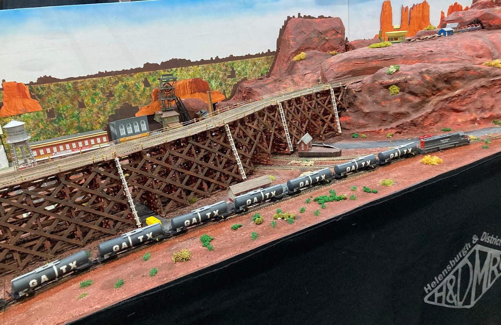
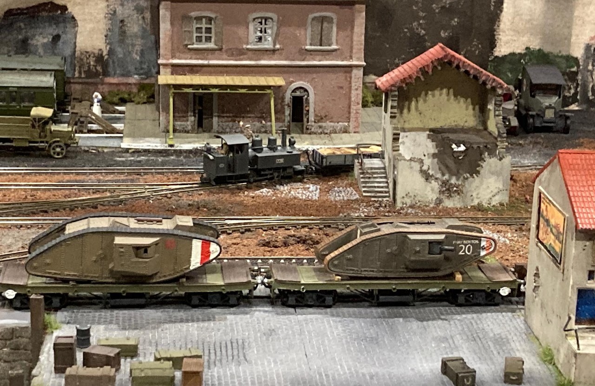
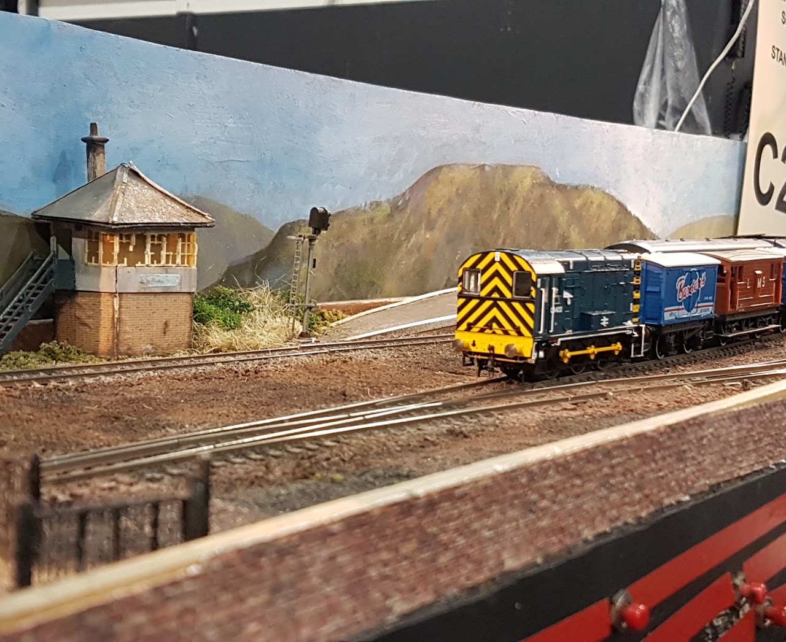
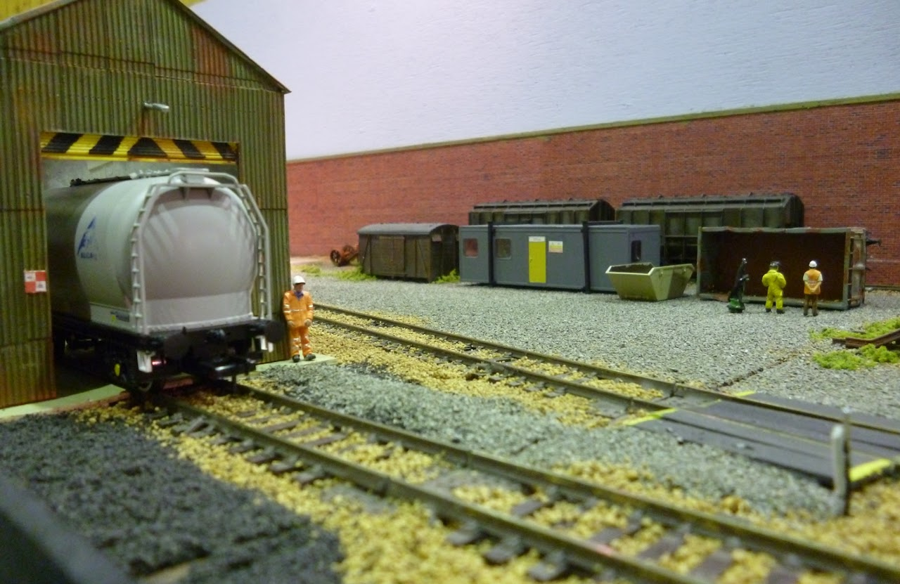
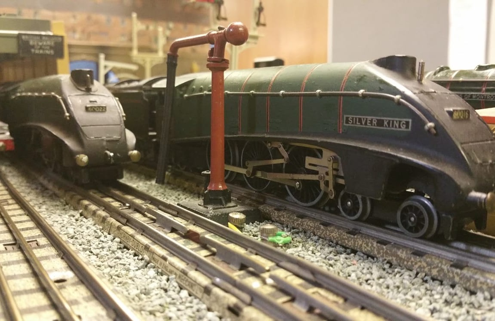
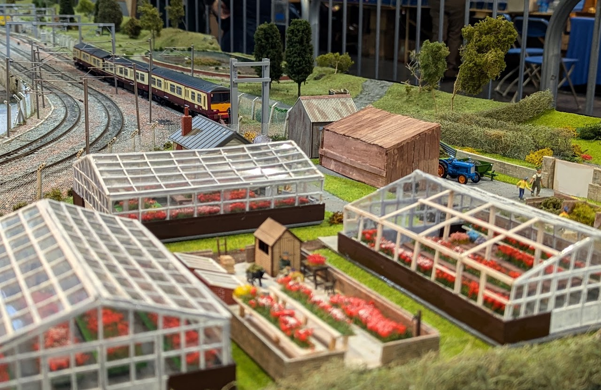
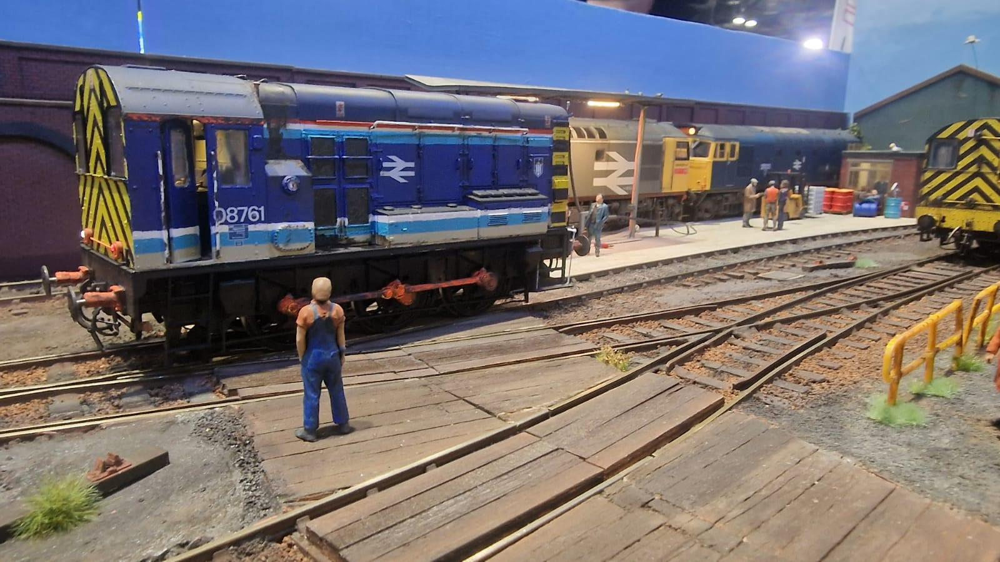

Our layouts
Nine layouts, from N to O gauge
Helensburgh and District Model Railway Club and its members have interests and styles of modelling that spread our layouts far and wide. From sleepy Scottish villages to bustling inner city commuter stations. From the vast wastelands of the Western Front to the wide open plains and mountain ranges of the USA.
-
 N gauge
N gauge
Millig Bay
Rival railway companies compete to serve a small Scottish bay, with its distillery, farm and caravan park.
-

N gaugeMillig Creek
American railroading on a grand scale, with long trains crossing trestles beneath red sandstone bluffs.
-

OO9 narrow gaugeTrenches
The narrow gauge supply lines of the Western Front during the First World War.
-

OO gaugeDeadend Sidings
An inglenook shunting puzzle where visitors take the controls and make up a train.
-

OO gaugeMillig Yard
Wagon repairs and locomotive servicing beside a busy secondary main line.
-

OO gauge 3-railAsitwas
A Hornby Dublo engine shed with coaling and refuelling facilities, set in the late steam era.
-

OO gaugeClydemuir
North Clyde electrics at a station loosely based on Dalmuir, and one of the largest layouts the club has built.
-

O gaugeLockdown Lane
A fuelling and stabling point in an industrial setting, built at home during lockdown.
-
 O gauge
O gauge
Canal Sidings
A single-line branch beside a disused canal, serving a factory with DMUs and a diesel shunter.
New members are always welcome
We meet most weeks throughout the year on Mondays and Wednesdays. If you want to come along and see what we get up to, send us an email.